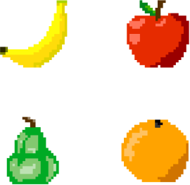
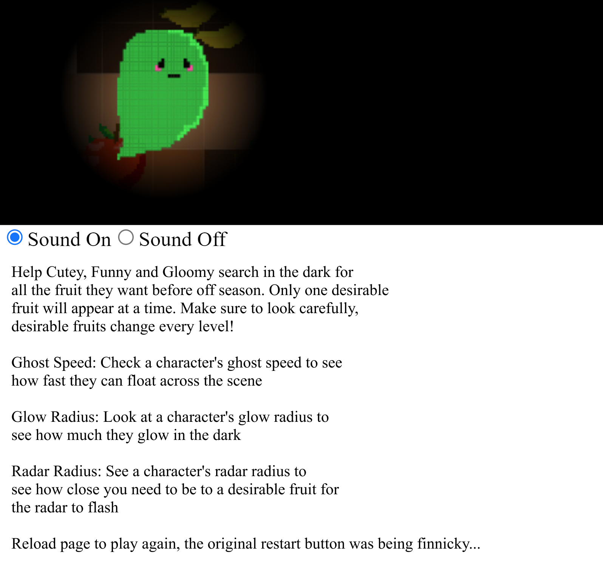
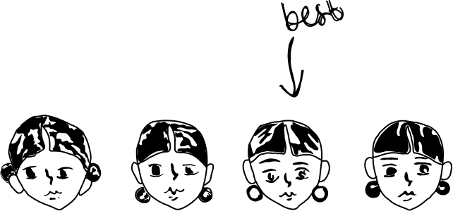
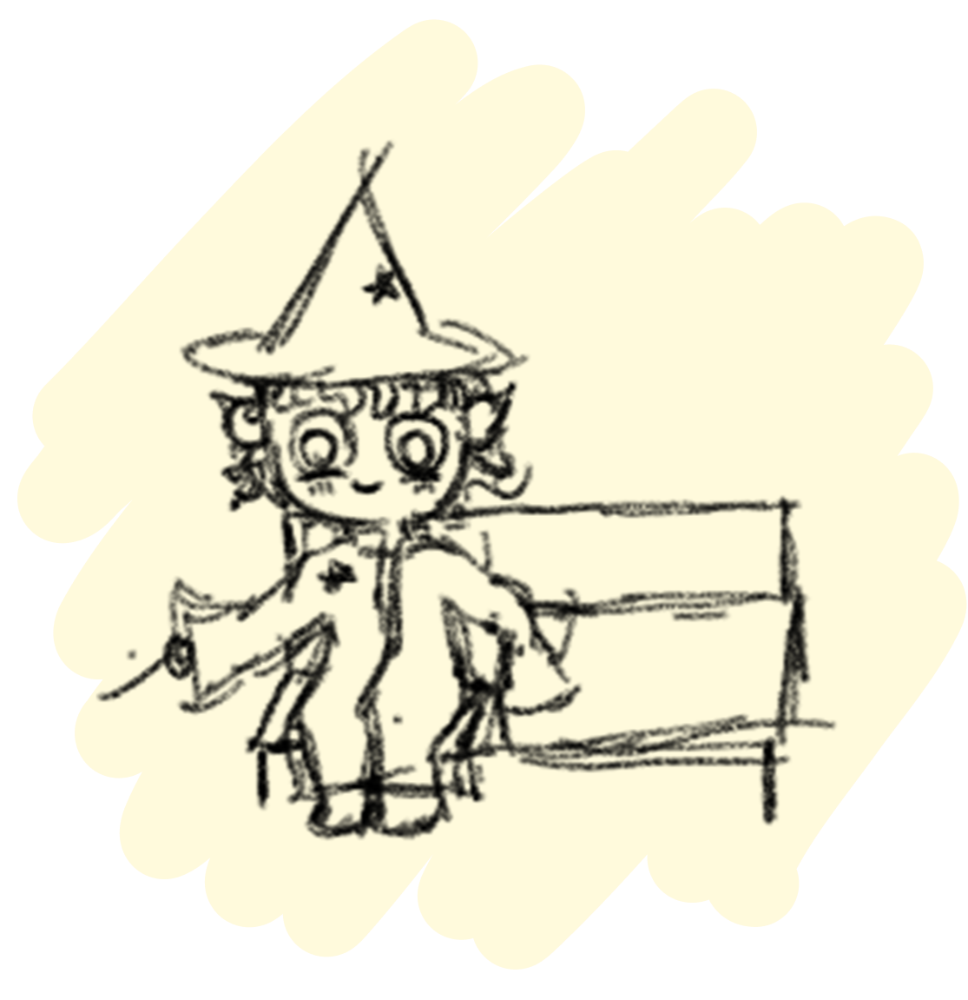
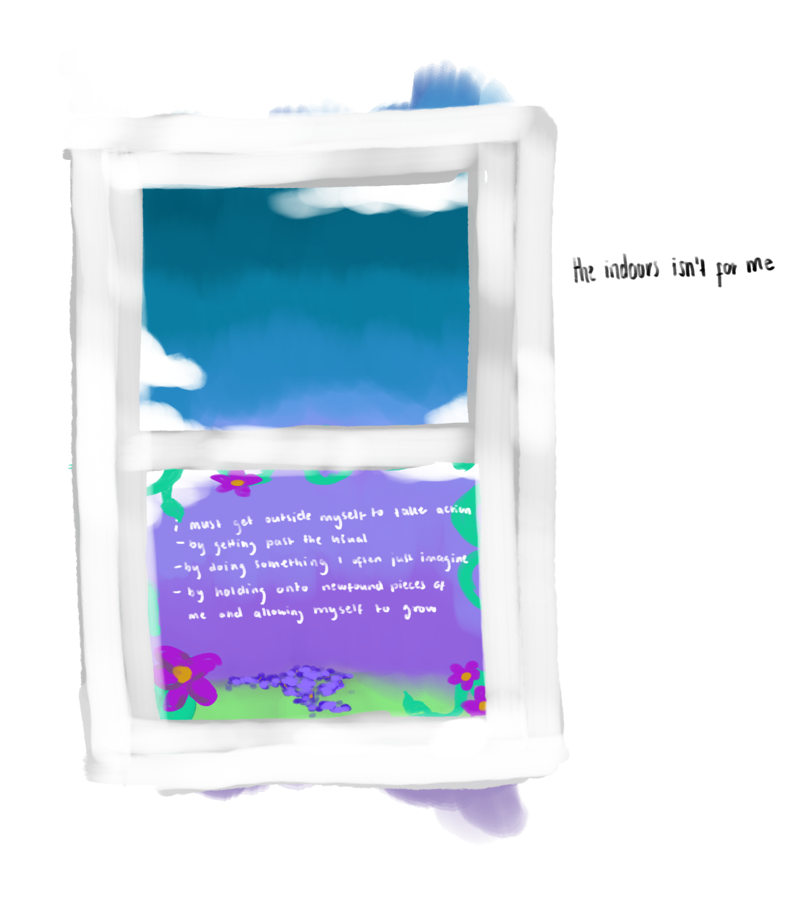
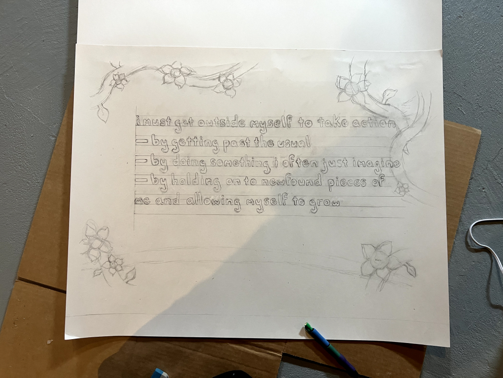
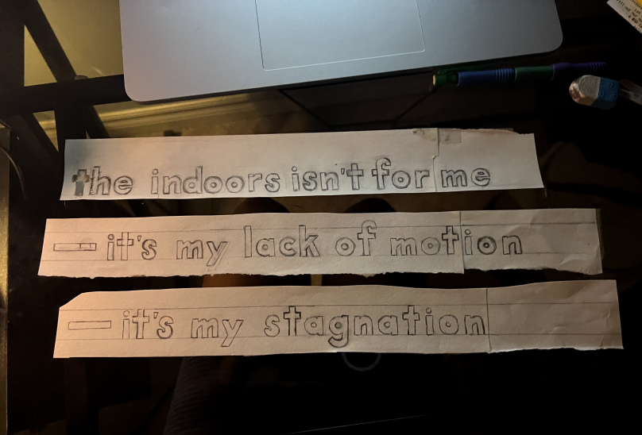
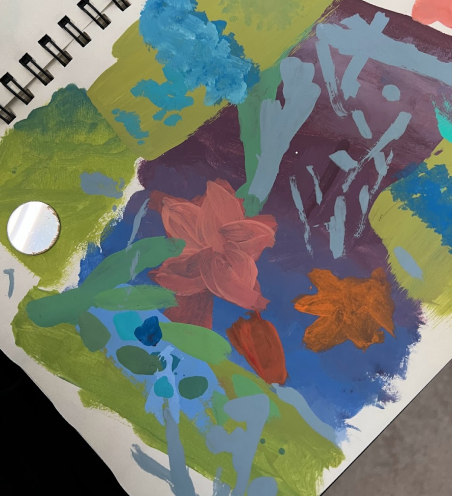
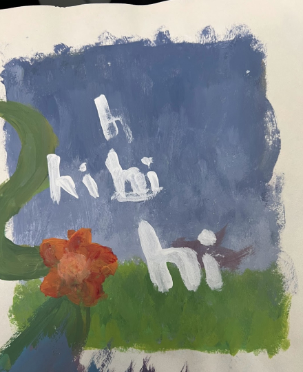
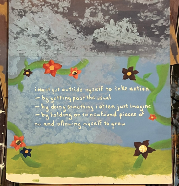

In
Ghostly
Sight
solo project
p5.js game
roles
designer,
programmer,
illustrator
year
2020
for
intro to
computer
programming 2
In Ghostly Sight is a retro-styled JavaScript game created using the p5.js library. Centering on my enduring inclination to code a glowing effect into a program one day, a game about ghosts was born…
In Ghostly Sight
The pixel-art style of the game’s visual items was created using the Adobe Illustrator live paint tool. The ghosts in this game were inherently inspired by those in Pacman–the goal of the game is to help them collect fruits. Whilst the game keeps the retro vibe in check, it maintains a different feel from Pacman in both gameplay and looks.
In Ghostly Sight

The goal of this project was to showcase programming skills I’d gained throughout a CS course. The making of the game provided the opportunity to practice storytelling and create memorable characters.
1 of 7
Bluetooth
Rules
My Day
solo project
infographic
comic
roles
researcher,
illustrator
year
2020
for
intro to
digital culture
Bluetooth Rules My Day is a comic strip made in response to a concept termed When Technology Stops Being Magic. It highlights how technology that may appear as a magic wand may in fact serve as a limb. Made by visualising the results of a 24-hour auto-ethnographic study (taking notes) of my interactions with the digital medium Bluetooth.
Bluetooth Rules My Day
Created using Adobe Photoshop, the comic strip utilises a grayscale palette with accents of colour to highlight upon the narrative elements regarding interactions with bluetooth. The character at the centre of the comic was designed in the likeness of myself to correspond with the nature of the project. The drawn comical style allows for an entertaining and didactic reading experience.
2 of 7
Pandemic
Panic
Film
team project
short film
documentary
roles
editor,
voice talent,
producer
year
2020
for
intro to
digital media
design
Pandemic Panic is a piece that demonstrates the life and worries of students during the COVID-19 pandemic lockdown, one of the most surreal periods in the past few years. We were predominantly stuck inside and spread across Ontario during the creation of this 5-minute documentary.
Pandemic Panic
With the pandemic lining people’s every thought, we were drawn to explore the pandemic itself. So we planned and produced a documentary about how students were faring at the time.
Pandemic Panic
Our varying levels of access to people and tools meant we applied ourselves in ways we could. Constant video calls and a slow shared Adobe Premiere Pro file eventually let us produce a piece that resonated then and doesn't cease to baffle us cease to now.
3 of 7
Talk
to Usie
solo project
ux design
roles
researcher,
designer,
illustrator
year
2022
for
special topics
in interaction
design
Talk to Usie is an interactive experience created as a platform for a modernised terms of use script. People tend to disregard text-heavy terms and conditions interfaces because they are tedious and time-consuming. Talk to Usie was developed as part of an exploration of new ways for apps to communicate with users regarding terms of use at sign up.
Talk to Usie

With the desire to build a narrative and promote a positive relationship between users and the application, the creation of a relatable personality was necessary. The initial character design was a chibi wizard which was childish.
Considering that the generalised target audience of most apps are adolescents who are able to sign up by themselves, someone youthful was better–someone like Usie…
Talk to Usie
Several facial expression and position cards were created whilst the bedroom background remained the same. These cards were then arranged using Figma along with speech elements and buttons, forming a moderately interactive and animated terms of use experience–the world of Usie.
4 of 7
WYA
WYWG
solo project
animation/
reel
roles
animator,
sound artist,
storyteller
year
2023
for
design in
society
WYAWYWG stands for where you at, where you wanna go, which was a prompt for me, denoting that this is in fact a piece about me. It is both an animation and text adventure, which I used to act as a reel for some of my sound work. This combination allowed me to share my passion for all these forms of media at once; sound, illustration and storytelling take turns being centre stage!
5 of 7
Wooded
Girl
Concepts
solo project
character
design
roles
designer
illustrator
year
2023
for
design in
society
The Wooded Girl is a game character/ monster designed for the fictional horror of the Wooded Girl Concepts. It pays homage to the work of Boro Dantes, as it ventures into the realm of the uncanny and directly refers to own Black Widow Concepts. . Inspiration for this character came from my interest in true stories about forests.
6 of 7
PSA:
The
Window
solo/ team project
psa
instalment
roles
designer,
illustrator
year
2023
for
design in
society
The Window
The idea behind this project was to create a physicalised PSA that included text about our personal design philosophies, ultimately finding a way to extend them to others interactively.
The Window
Inspired by one friend’s spontaneous suggestion about creating a home, three of us decided to create a collective exhibit about openings of a house.
The Window
The Window
My piece was a 3D interactive sash window with a curtain installed in front. The window was created by hand from cardboard, glue, vinyl and paint.
The text was created through a combination of hand lettering, tracing and painting. The visuals were painted on Bristol board and glued behind the window frame.
    The Window
The text on the PSA directly plays on the perspective of the window which is situated from inside looking out.
7 of 7